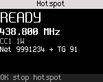

Esta página aún no está traducida; se muestra en inglés.
Hotspot Mode
In hotspot mode the radio is a DMR modem for a computer running MMDVMHost, Pi-Star or a similar host. The host connects the radio to a DMR network (BrandMeister, TGIF and others). The radio carries the calls to and from radios nearby on one frequency. The radio speaks the MMDVM modem protocol over its serial port. On radios with USB this is the USB serial port. On radios without USB it is the programming cable (Radio reference).
Some radios leave hotspot mode out of their default image. On those radios Tools > Hotspot is dimmed. The Radio reference lists them and says where hotspot mode is verified.
What you need
- A computer with MMDVMHost (Linux, macOS), or a Pi-Star style image on a Raspberry Pi.
- The radio's USB cable, or its programming cable on a radio without USB.
- The codec isn't needed: the radio passes the DMR frames through without decoding the voice.
- Settings > Connections > Hotspot allowed on (the default).
Setting up MMDVMHost
Point MMDVMHost's modem at the radio's serial port and run it as a simplex DMR hotspot. The parts of MMDVM.ini that
matter:
[General]
Duplex=0
[Info]
RXFrequency=438800000
TXFrequency=438800000
[Modem]
Protocol=uart
UARTPort=/dev/ttyACM0
UARTSpeed=115200
[DMR]
Enable=1
ColorCode=1
[DMR Network]
Enable=1
Slot1=0
Slot2=1
- On USB the port is
/dev/ttyACM0(or the next number) on Linux and/dev/cu.usbmodem...on macOS. The radio's USB ID is 1FC9:0094. - Use the same frequency for receive and transmit, inside the radio's bands (Radio reference).
- The radio uses timeslot 2 only: enable network slot 2 and disable slot 1.
- The baud rate is ignored on USB. 115200 works.
- Leave the other modes (D-Star, YSF, P25, NXDN, POCSAG, FM) off. The radio refuses them. POCSAG is accepted but never transmitted.
On Pi-Star style images, choose a USB MMDVM modem on the radio's serial port and the settings above.
The radio reports itself to the host as "RadioFoundry", the radio model (for example "RadioFoundry XR-100UV") and the firmware version.
Starting
The radio enters hotspot mode by itself when the host opens the port and sends its first MMDVM request. The screen changes to the hotspot screen.

The hotspot screen shows:
- the state: STARTING, HOTSPOT, RX RF while a radio nearby talks, TX NET while a network call goes out;
- the frequency, the color code and the power;
- the current or last call, with its source ("RF" or "Net"), the caller and the talkgroup.
OK, 6 (Tools), 3 (Hotspot) shows how to start hotspot mode. While it runs, the page has a "Stop hotspot" row.
While in hotspot mode
- * switches between the hotspot screen and the diagnostics page.
- PTT doesn't transmit ("Hotspot mode: PTT off").
- Any other key shows "Hotspot on: OK stops it".
- If the host asks for a CW ID, the radio sends it in Morse on FM on the hotspot frequency, then returns to DMR. The Morse is 20 words per minute at 800 Hz.
Stopping
The radio leaves hotspot mode and returns to its channel when:
- you press OK or hold Back ("Hotspot stopped");
- the host closes the port, or the USB cable is unplugged;
- the host sends nothing for 20 s.
To stop the radio from entering hotspot mode at all, turn Settings > Connections > Hotspot allowed off.
MMDVM SFR (single frequency repeater)
In MMDVM SFR the hotspot repeats a call heard on timeslot 1 on timeslot 2 of the same frequency. It also sends the call to the network. Radios nearby in direct mode hear both. It isn't on every radio (Radio reference).
The host turns MMDVM SFR on by running duplex with the receive and transmit frequencies equal (Duplex=1,
RXFrequency = TXFrequency). Setting Duplex=0 or different frequencies turns it off.
The repeat timing measured on air is in the Radio reference.
Standalone SFR
Experimental: calls through a standalone SFR don't come through reliably yet, between some radios not at all. What fails, on which radio, and the workarounds are in Known issues by radio.
A channel can be a single frequency repeater, or a radio using one, without a host. Set the channel's SFR role in the Codeplug Editor. The channel must have one frequency (receive = transmit).
The VFO can take a role too, with no codeplug change. In the DMR VFO open Tools > Single-freq repeater: Role steps through Off, User, User (ERDM), Repeater and Repeater (ERDM style); Inbound slot switches TS1 and TS2. The VFO keeps its role, also after power off. It works only in DMR with one frequency: with a TX offset the page says the role is off. The VFO's color code is the repeater's on both slots. Copy to VFO brings a channel's role along.
| Role | What the radio does |
|---|---|
| Repeater (Rpt, Rpt Moto) | Repeats every call heard on the inbound slot on the other slot, 90 ms later. PTT is off ("Repeater channel"). The radio shows receiving while it repeats; the red LED lights while it sends. It stays an ordinary channel while transmit is inhibited, the battery is critical or a scan or dual watch runs, and repeats again once that clears. Settings > Talk & listen > SFR CW ID makes it send its callsign in Morse every 5 to 30 minutes, after traffic |
| User (User, ERDM) | Talks on the inbound slot, in step with the repeater. Plays the repeater's copy of a call. Settings > Talk & listen > SFR receive can also take the talker's own copy: the first to arrive, or both, with each damaged frame taken from the other copy (Dual-path RX) |
All radios on the frequency must use the same inbound slot. A user with inbound slot 2 listens on slot 1, so it still hears a user set to inbound slot 1: two set-ups can't share a frequency. There is no CACH on an SFR: users follow the repeater's slot sync. Tools > Single-freq repeater shows the channel's role, its slots and what the repeater is doing. Details are in docs/spec/sfr.md.
Two radios as a duplex repeater
Experimental: two radios, each on its own port of one computer, act as one full duplex repeater. One receives, the
other transmits. Both need split duplex in their image. The feature matrix shows which radios offer it. The computer runs
tools/split_duplex_host.py. The slot numbering is still being checked on the bench. Details are in
docs/spec/split-duplex.md.